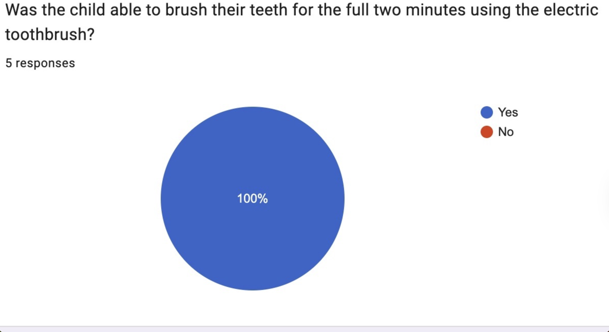
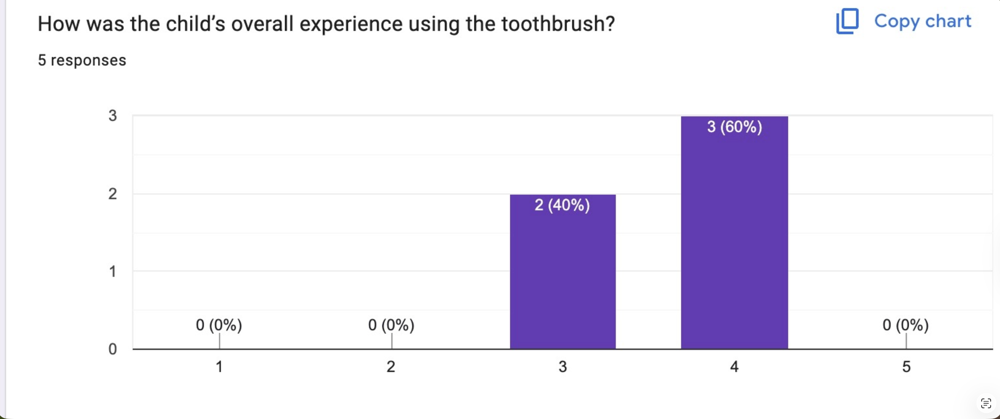
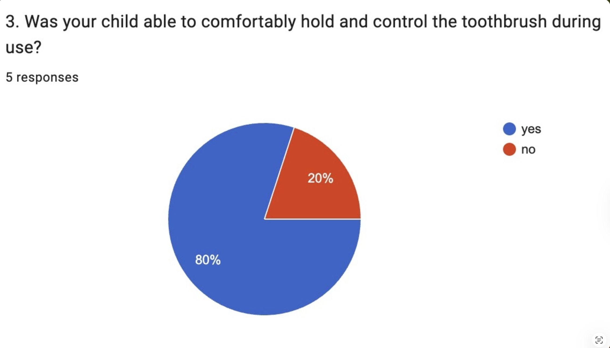

Testing Scenarios
We tested Brush Buddy by having users try the toothbrush in a normal brushing routine. The main goal was to see if the child could brush for the full two minutes, stay engaged, and comfortably hold and control the toothbrush.
Test Results
The results showed that the prototype was successful in helping children complete the full brushing time. All 5 responses said the child was able to brush for the full two minutes. Most users also rated the overall experience positively, with 60% giving it a 4 and 40% giving it a 3.



Reviewer Feedback
Reviewers liked that Brush Buddy made brushing more interactive and helped encourage children to brush for the recommended amount of time. However, some feedback showed that the toothbrush could be improved by making it easier to hold and control, since 20% of responses said the child was not fully comfortable using it.
Reflections and Design Iterations
Based on the feedback, the biggest improvement would be making the toothbrush smaller and more comfortable to hold. The testing showed that the timer and engagement features worked well, but the physical design still needs to be improved so it feels more like a normal toothbrush.
Future Work and Improvements
In the future, we would make the prototype more compact, improve the handle shape, and lower the cost of the electronic parts. We would also continue testing with more users to see if the product works well for different ages and brushing habits.
Marketing Plan
Brush Buddy would be marketed as a fun toothbrush that helps children brush for the full two minutes. The product could be advertised through short videos, dentist offices, and parenting websites by showing how it makes brushing easier, more consistent, and more enjoyable.